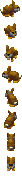
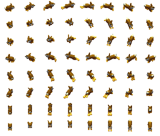

Tribe16 hares (Rabbits)Type / job ID48Animation job ID48Native namebaby_animalEnglishYoung AnimalSex / ageyoungNative allowedTrueParent chain (baseatomics)[48]Confidence{"sourceMapping": "SOURCE_COMPLETE", "framePixels": "PIXEL_CONFIRMED (per frame; see Catalogs/pixel_validation.csv)", "palette": "SOURCE_BODY_PALETTE", "shadow": "Coverage mask only; native destination darkening -> PRESENTATION_APPROXIMATION", "timing": "Native frame order and selection rules recorded; tick-to-seconds rate UNKNOWN"}Native references{"Game.exe": ["0x0048BD66 GraphicsAnimationRegistry_LoadFromCif", "0x0048CEA1 BobSeq global lookup", "0x00494AE6 frame selection", "0x004803D5 creation binding/palette", "0x00480576 job-change rebinding", "0x0048B258 random palette patches", "0x0049B930 shadow destination darkening"], "cpp": "MobileSpriteRegistry / MobileSpriteRuntimeOwner / ProductionWorldCompositor"}
Graphics bindings
| phase | section | inherited from | body variants (selector: body / shadow) | head variants | palettes | random palettes |
|---|---|---|---|---|---|---|
| initial | 16 | 0: CR_Ani_Body_00 / CR_Ani_Body_00_s atlas | house01, deer01 |
Animations
Sheets: one row per native direction (0..7, only directions with frames), columns in native frame-list order, shared anchor. Colours use the declared base palette; runtime RNG palette ordinal, player colour and random patches are not applied (PRESENTATION_APPROXIMATION). Shadow masks are kind-2 coverage DATA.
atomic 2 animal_rabbit_baby_idle | BobSeq animal_rabbit_walk | section 352 | mode 0 | length 30
frame = min(count-1, floor(count*progress/duration)); duration from atomic length


direction frame lists (BOB ids)
[{"direction": 0, "bodyBobs": [2463], "headBobs": [2463], "status": null}, {"direction": 1, "bodyBobs": [2471], "headBobs": [2471], "status": null}, {"direction": 2, "bodyBobs": [2431], "headBobs": [2431], "status": null}, {"direction": 3, "bodyBobs": [2439], "headBobs": [2439], "status": null}, {"direction": 4, "bodyBobs": [2447], "headBobs": [2447], "status": null}, {"direction": 5, "bodyBobs": [2455], "headBobs": [2455], "status": null}, {"direction": 6, "bodyBobs": [2487], "headBobs": [2487], "status": null}, {"direction": 7, "bodyBobs": [2479], "headBobs": [2479], "status": null}]atomic 3 animal_rabbit_baby_idle | BobSeq animal_rabbit_walk | section 351 | mode 0 | length 30
frame = min(count-1, floor(count*progress/duration)); duration from atomic length



direction frame lists (BOB ids)
[{"direction": 0, "bodyBobs": [2463], "headBobs": [2463], "status": null}, {"direction": 1, "bodyBobs": [2471], "headBobs": [2471], "status": null}, {"direction": 2, "bodyBobs": [2431], "headBobs": [2431], "status": null}, {"direction": 3, "bodyBobs": [2439], "headBobs": [2439], "status": null}, {"direction": 4, "bodyBobs": [2447], "headBobs": [2447], "status": null}, {"direction": 5, "bodyBobs": [2455], "headBobs": [2455], "status": null}, {"direction": 6, "bodyBobs": [2487], "headBobs": [2487], "status": null}, {"direction": 7, "bodyBobs": [2479], "headBobs": [2479], "status": null}]atomic 4 animal_rabbit_baby_idle | BobSeq animal_rabbit_walk | section 350 | mode 0 | length 30
frame = min(count-1, floor(count*progress/duration)); duration from atomic length


direction frame lists (BOB ids)
[{"direction": 0, "bodyBobs": [2463], "headBobs": [2463], "status": null}, {"direction": 1, "bodyBobs": [2471], "headBobs": [2471], "status": null}, {"direction": 2, "bodyBobs": [2431], "headBobs": [2431], "status": null}, {"direction": 3, "bodyBobs": [2439], "headBobs": [2439], "status": null}, {"direction": 4, "bodyBobs": [2447], "headBobs": [2447], "status": null}, {"direction": 5, "bodyBobs": [2455], "headBobs": [2455], "status": null}, {"direction": 6, "bodyBobs": [2487], "headBobs": [2487], "status": null}, {"direction": 7, "bodyBobs": [2479], "headBobs": [2479], "status": null}]atomic 5 animal_rabbit_baby_idle | BobSeq animal_rabbit_walk | section 347 | mode 0 | length 30
frame = min(count-1, floor(count*progress/duration)); duration from atomic length


direction frame lists (BOB ids)
[{"direction": 0, "bodyBobs": [2463], "headBobs": [2463], "status": null}, {"direction": 1, "bodyBobs": [2471], "headBobs": [2471], "status": null}, {"direction": 2, "bodyBobs": [2431], "headBobs": [2431], "status": null}, {"direction": 3, "bodyBobs": [2439], "headBobs": [2439], "status": null}, {"direction": 4, "bodyBobs": [2447], "headBobs": [2447], "status": null}, {"direction": 5, "bodyBobs": [2455], "headBobs": [2455], "status": null}, {"direction": 6, "bodyBobs": [2487], "headBobs": [2487], "status": null}, {"direction": 7, "bodyBobs": [2479], "headBobs": [2479], "status": null}]atomic 6 animal_rabbit_baby_idle | BobSeq animal_rabbit_walk | section 348 | mode 0 | length 30
frame = min(count-1, floor(count*progress/duration)); duration from atomic length


direction frame lists (BOB ids)
[{"direction": 0, "bodyBobs": [2463], "headBobs": [2463], "status": null}, {"direction": 1, "bodyBobs": [2471], "headBobs": [2471], "status": null}, {"direction": 2, "bodyBobs": [2431], "headBobs": [2431], "status": null}, {"direction": 3, "bodyBobs": [2439], "headBobs": [2439], "status": null}, {"direction": 4, "bodyBobs": [2447], "headBobs": [2447], "status": null}, {"direction": 5, "bodyBobs": [2455], "headBobs": [2455], "status": null}, {"direction": 6, "bodyBobs": [2487], "headBobs": [2487], "status": null}, {"direction": 7, "bodyBobs": [2479], "headBobs": [2479], "status": null}]atomic 7 animal_rabbit_baby_idle | BobSeq animal_rabbit_walk | section 349 | mode 0 | length 30
frame = min(count-1, floor(count*progress/duration)); duration from atomic length


direction frame lists (BOB ids)
[{"direction": 0, "bodyBobs": [2463], "headBobs": [2463], "status": null}, {"direction": 1, "bodyBobs": [2471], "headBobs": [2471], "status": null}, {"direction": 2, "bodyBobs": [2431], "headBobs": [2431], "status": null}, {"direction": 3, "bodyBobs": [2439], "headBobs": [2439], "status": null}, {"direction": 4, "bodyBobs": [2447], "headBobs": [2447], "status": null}, {"direction": 5, "bodyBobs": [2455], "headBobs": [2455], "status": null}, {"direction": 6, "bodyBobs": [2487], "headBobs": [2487], "status": null}, {"direction": 7, "bodyBobs": [2479], "headBobs": [2479], "status": null}]atomic 9 animal_bear_eat | BobSeq animal_rabbit_walk | section 353 | mode 0 | length 20
frame = min(count-1, floor(count*progress/duration)); duration from atomic length


direction frame lists (BOB ids)
[{"direction": 0, "bodyBobs": [2463], "headBobs": [2463], "status": null}, {"direction": 1, "bodyBobs": [2471], "headBobs": [2471], "status": null}, {"direction": 2, "bodyBobs": [2431], "headBobs": [2431], "status": null}, {"direction": 3, "bodyBobs": [2439], "headBobs": [2439], "status": null}, {"direction": 4, "bodyBobs": [2447], "headBobs": [2447], "status": null}, {"direction": 5, "bodyBobs": [2455], "headBobs": [2455], "status": null}, {"direction": 6, "bodyBobs": [2487], "headBobs": [2487], "status": null}, {"direction": 7, "bodyBobs": [2479], "headBobs": [2479], "status": null}]walk 0 walk | BobSeq animal_rabbit_walk | section 1135 | mode 0 | length None
frame = frameTick % count (walk; caller frame tick)



direction frame lists (BOB ids)
[{"direction": 0, "bodyBobs": [2463, 2464, 2465, 2466, 2467, 2468, 2469, 2470], "headBobs": [2463, 2464, 2465, 2466, 2467, 2468, 2469, 2470], "status": null}, {"direction": 1, "bodyBobs": [2471, 2472, 2473, 2474, 2475, 2476, 2477, 2478], "headBobs": [2471, 2472, 2473, 2474, 2475, 2476, 2477, 2478], "status": null}, {"direction": 2, "bodyBobs": [2431, 2432, 2433, 2434, 2435, 2436, 2437, 2438], "headBobs": [2431, 2432, 2433, 2434, 2435, 2436, 2437, 2438], "status": null}, {"direction": 3, "bodyBobs": [2439, 2440, 2441, 2442, 2443, 2444, 2445, 2446], "headBobs": [2439, 2440, 2441, 2442, 2443, 2444, 2445, 2446], "status": null}, {"direction": 4, "bodyBobs": [2447, 2448, 2449, 2450, 2451, 2452, 2453, 2454], "headBobs": [2447, 2448, 2449, 2450, 2451, 2452, 2453, 2454], "status": null}, {"direction": 5, "bodyBobs": [2455, 2456, 2457, 2458, 2459, 2460, 2461, 2462], "headBobs": [2455, 2456, 2457, 2458, 2459, 2460, 2461, 2462], "status": null}, {"direction": 6, "bodyBobs": [2487, 2488, 2489, 2490, 2491, 2492, 2493, 2494], "headBobs": [2487, 2488, 2489, 2490, 2491, 2492, 2493, 2494], "status": null}, {"direction": 7, "bodyBobs": [2479, 2480, 2481, 2482, 2483, 2484, 2485, 2486], "headBobs": [2479, 2480, 2481, 2482, 2483, 2484, 2485, 2486], "status": null}]Atomics declared without a graphics record
81:animal_bear_attack
0x00494AE6: lookup fails along the parent chain, then retries selector 0 at the chain root.